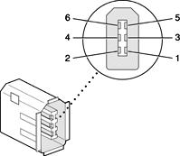

The PowerBook G4 computer has one external FireWire IEEE 1394a port. The FireWire port
The FireWire hardware and software provided with the PowerBook G4 computer are capable of all asynchronous and isochronous transfers defined by IEEE standard 1394a.
The FireWire connector has six contacts, as shown in Figure 3-2. The connector pin assignments are shown in Table 3-2.
Figure 3-2 FireWire connector
When the computer is on, the power pin provides a maximum voltage of 17 V (no load) and up to 6 W power. Maximum current is 0.5 A and is controlled by an auto-resetting fuse.
Pin 2 of the 6-pin FireWire connector is ground for both power and the inner cable shield. If a 4-pin connector is used on the other end of the FireWire cable, its shell should be connected to the wire from pin 2.
The signal pairs are crossed in the cable itself so that pins 5 and 6 at one end of the cable connect with pins 3 and 4 at the other end. When transmitting, pins 3 and 4 carry data and pins 5 and 6 carry clock; when receiving, the reverse is true.
Developers of FireWire peripherals are required to provide device drivers. A driver for DV (digital video) is included in QuickTime.
The PowerBook G4 computer can boot from a FireWire storage device that implements SBP-2 (Serial Bus Protocol) with the RBC (reduced block commands) command set. Detailed information is available only under non-disclosure agreement; contact Developer Technical Support at dts@apple.com.
For additional information about the FireWire interface and the Apple APIs for FireWire device control, refer to the resources listed at "FireWire Interface".
One option at boot time is to put the computer into a mode of operation called Target Disk mode. This mode is similar to SCSI Disk mode on a PowerBook computer equipped with a SCSI port, except it uses a FireWire connection instead of a special SCSI cable.
When the PowerBook G4 computer is in Target Disk mode and connected to another Macintosh computer by a FireWire cable, the PowerBook G4 computer operates like a FireWire mass storage device with the SBP-2 (Serial Bus Protocol) standard. Target Disk mode has two primary uses:
The PowerBook G4 computer can operate in Target Disk Mode as long as the other computer has a FireWire port and is running either
To put the computer into Target Disk mode, the user holds down the T key while the computer is starting up. When Open Firmware detects the T key during the boot process, it transfers control to special Open Firmware code.
To take the computer out of Target Disk mode, the user presses the power button.
For more information about Target Disk mode, see the section "Target Mode" in Technote 1189, The Monster Disk Driver Technote. The technote is available on the Technote website at
http://developer.apple.com/technotes/